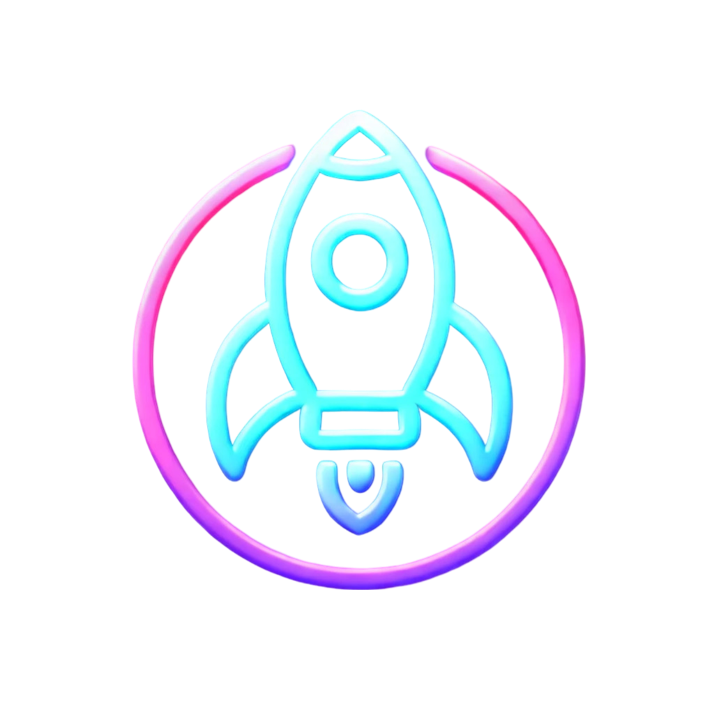
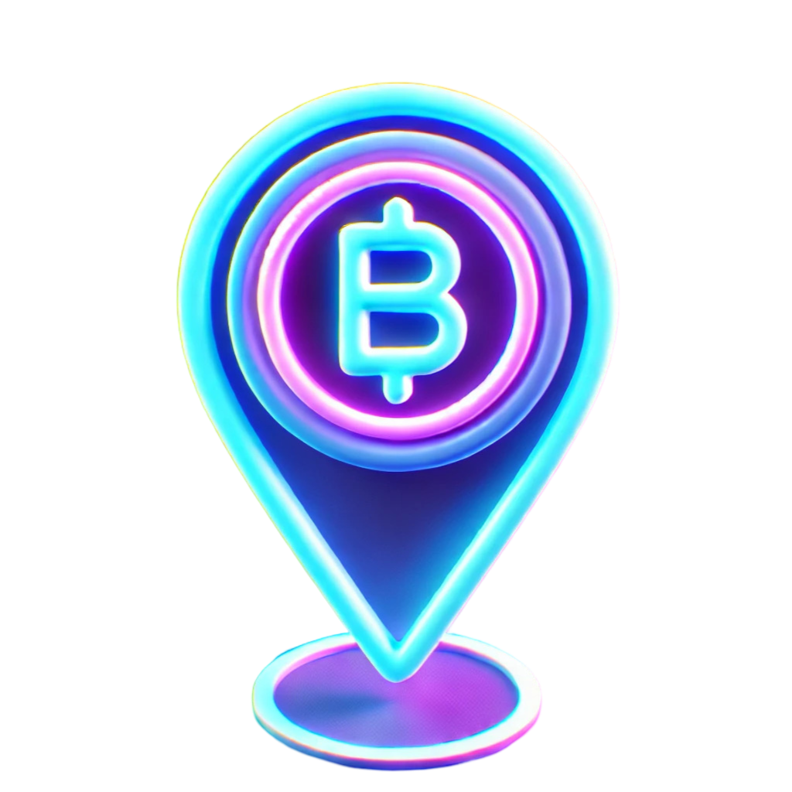

 Our Mission
At $BOOF, we are redefining the memecoin space by blending cutting-edge blockchain technology with strong community engagement. Our mission is to help fund organizations like the Department of Government Efficiency, along with an U.S. and European national officials that prioritize cryptocurrency to the public.
Unlike traditional tokens, $BOOF is designed for longevity. Taking what it means to be a "memecoin" to a whole different level. As Solana becomes exponentially popular, we aim to take part in this journey. Carving our own path as time goes on.
Our plan with the successful launch of $BOOF is to expand into other terrorites like the ERC-20 network. The goal by the end of 2025 is to have successfully partnered with D.O.G.E., (wishful thinking, we know!), hosted on Coinbase, and have an entire team of dedicated developers, marketers, and influencers all with the same goal of expanding crypto to people who haven't been exposed yet.
 Roadmap
Phase 1
Token Launch, Community Growth, Initial Marketing Push.
Phase 2
DEX Listings, First Partnerships, Networking.
Phase 3
BOOF DeFi Tools tailored to Content Creators & Companies, Governance Features, First Community Decision Poll.
The BOOF Ecosystem
The BOOF ecosystem is one that the crypto-space has never experienced before and can't be replicated. We not only integrate DeFi, but host community poll decisions that choose how we spend our earnings!
(Read our Mission Statement if you haven't already)
Crypto Priority
Our main goal at BOOF is centralizing the world's economy to circle cryptocurrency. By investing in BOOF you are directly supporting the DeFi movement and global shift into the future!
Influencer & Company DeFi Tools
Our top priority for 2025 is enabling selected influencers and companies to launch their own tokens. More details will be revealed in late spring this year!
Decentralized Governance
Community-driven decisions ensure fairness and sustainability. These polls will directly effect what area we spend our funding on.